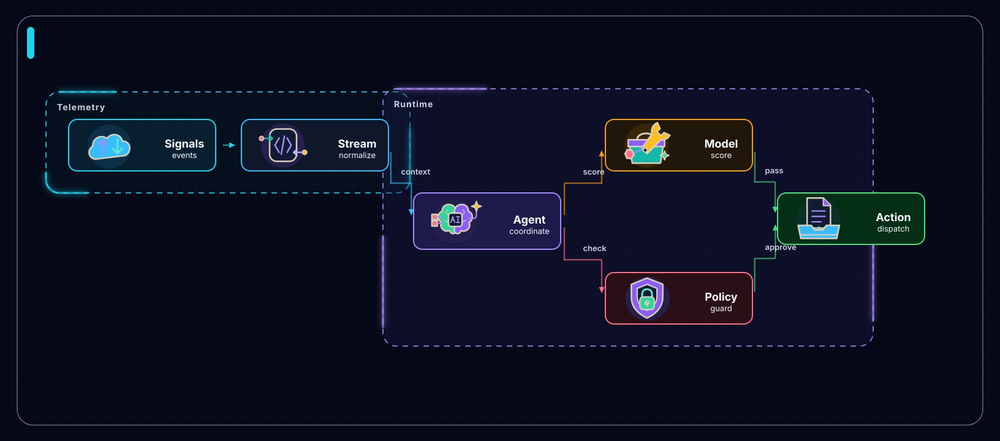
Animation unavailable; open HTML or view the static preview.deep-tech
Realtime AI Ops Mesh
signals move through policy, model, and action loops
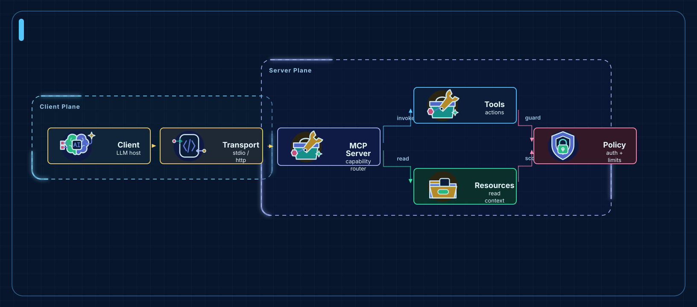
Animation unavailable; open HTML or view the static preview.blueprint
MCP Server Architecture
client requests route through tools, resources, auth, and transport
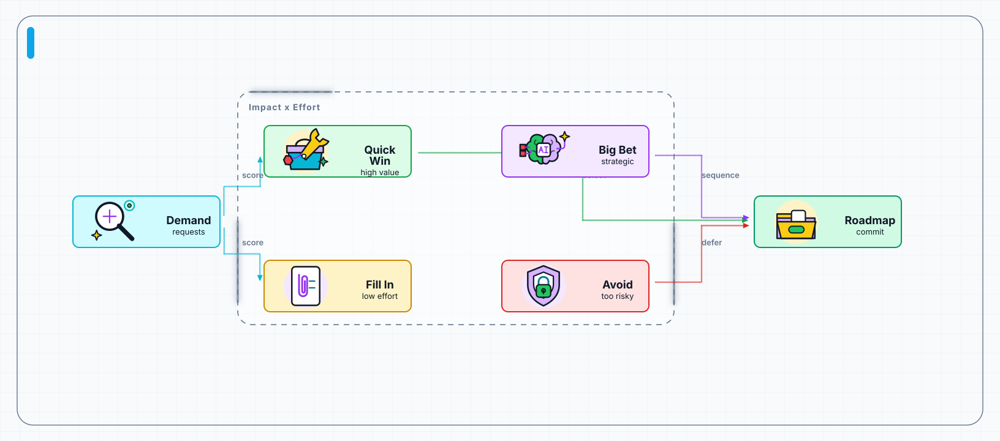
Animation unavailable; open HTML or view the static preview.flat-icon
Feature Priority Board
demand signals become a focused roadmap
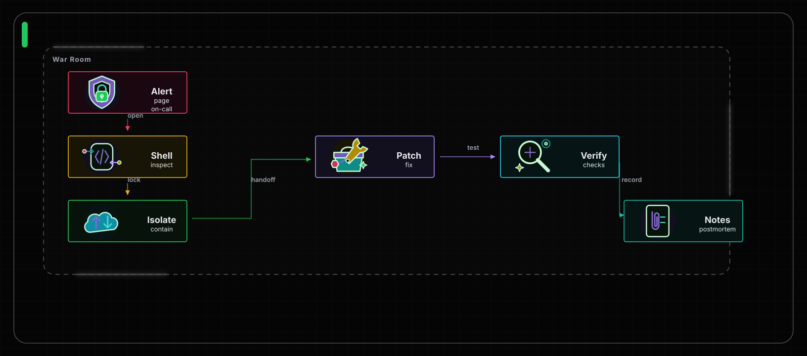
Animation unavailable; open HTML or view the static preview.dark-terminal
Incident Response Runbook
operators isolate, patch, and verify production
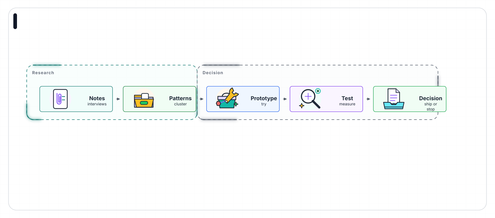
Animation unavailable; open HTML or view the static preview.notion-clean
Product Discovery Workflow
research notes become a tested product decision
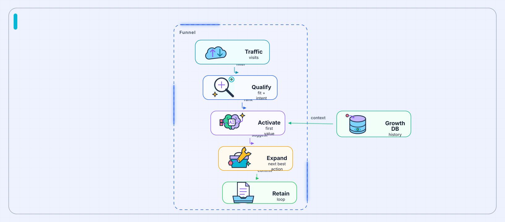
Animation unavailable; open HTML or view the static preview.glassmorphism
AI Growth Funnel
signals become qualified users, activation, and expansion loops
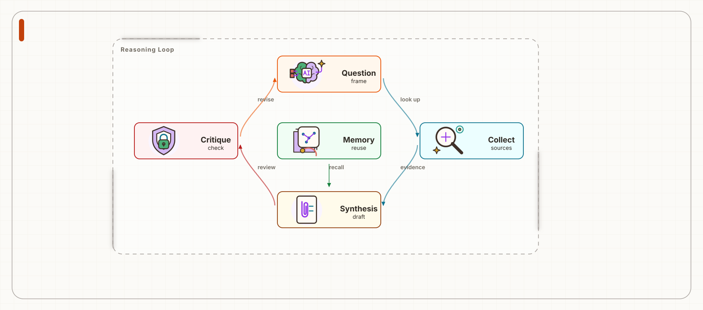
Animation unavailable; open HTML or view the static preview.claude-warm
Research Reasoning Loop
questions cycle through evidence and critique
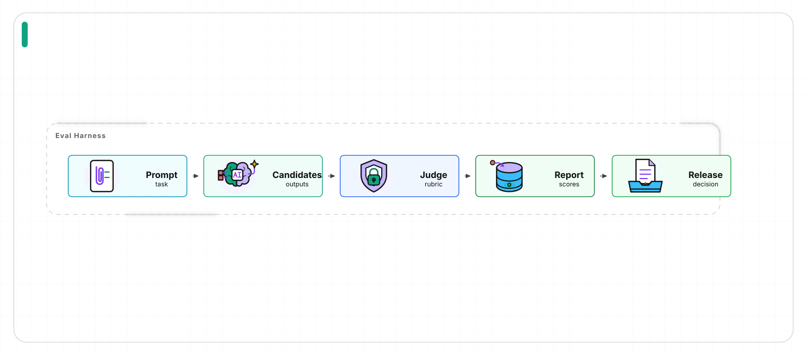
Animation unavailable; open HTML or view the static preview.openai-minimal
Evaluation Pipeline
prompts, candidates, judges, and release reports
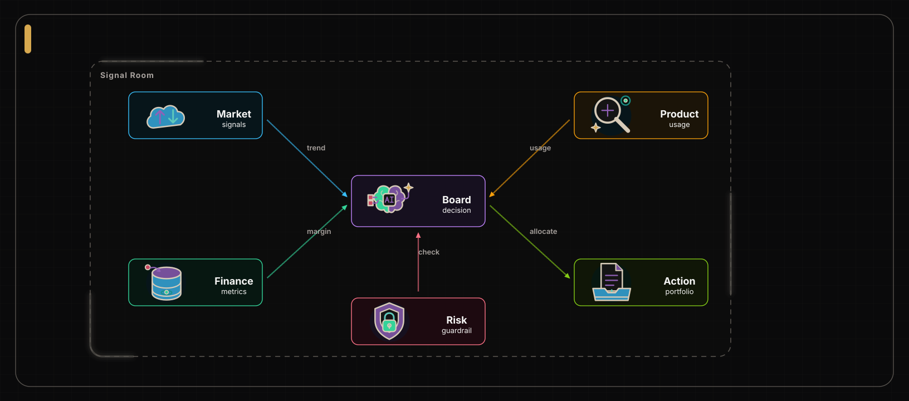
Animation unavailable; open HTML or view the static preview.dark-luxury
Executive Signal Network
market, finance, and product signals converge
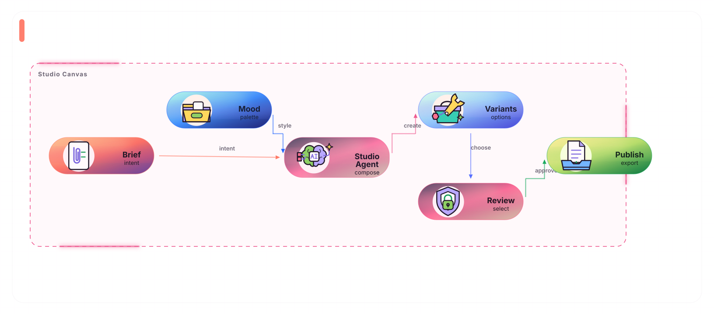
Animation unavailable; open HTML or view the static preview.aurora-orb
Creative Agent Studio
briefs become variants, reviews, and publishable assets
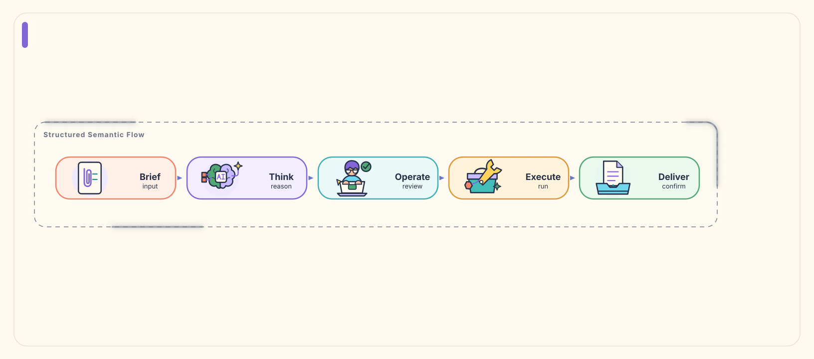
Animation unavailable; open HTML or view the static preview.illustrated-semantic
Semantic Delivery Pipeline
clear illustrated roles on a warm, low-noise canvas
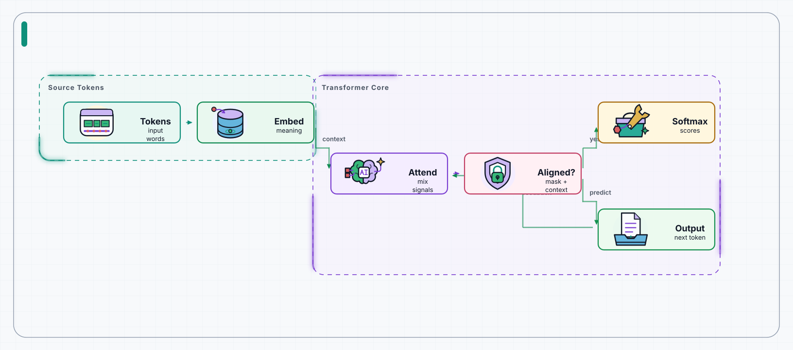
Animation unavailable; open HTML or view the static preview.sketch-board
Attention Teaching Flow
tokens, attention, alignment, and output as a staged lesson